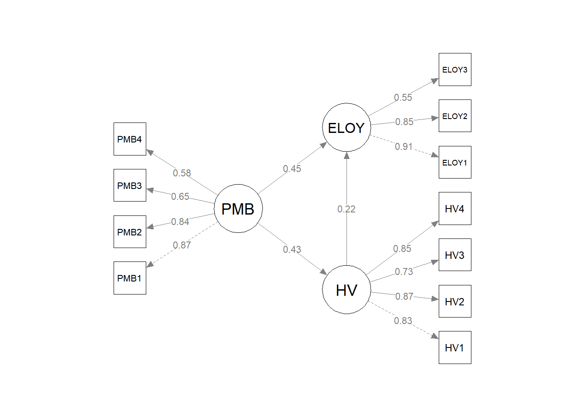

library(tidyverse)
library(readxl)
library(lavaan)
library(semPlot)
library(knitr)
set.seed(2026)Sesi 3: Structural Equation Modelling (SEM)
Bagian A: CB-SEM dengan lavaan
1. Persiapan
2. Import Data
Data tentang pengaruh Perceived Mental Benefits dan Hedonic Value terhadap E-Loyalty.
dat <- read_excel("data/sem/data.xlsx")
dat <- dat |> select(-No)
glimpse(dat)Rows: 485
Columns: 14
$ HV1 <dbl> 5, 4, 5, 5, 4, 5, 4, 5, 4, 4, 5, 4, 5, 2, 4, 4, 5, 5, 4, 4,…
$ HV2 <dbl> 5, 4, 4, 5, 4, 4, 4, 4, 5, 4, 5, 4, 5, 2, 4, 4, 5, 5, 5, 4,…
$ HV3 <dbl> 5, 4, 5, 4, 4, 5, 4, 4, 4, 3, 5, 4, 5, 2, 4, 4, 5, 5, 4, 4,…
$ HV4 <dbl> 5, 4, 5, 5, 4, 5, 4, 5, 5, 4, 5, 4, 5, 2, 3, 4, 4, 4, 4, 5,…
$ PMB1 <dbl> 4, 4, 4, 4, 5, 4, 3, 4, 4, 4, 4, 4, 4, 3, 4, 4, 4, 5, 5, 4,…
$ PMB2 <dbl> 4, 4, 4, 4, 4, 4, 3, 4, 4, 4, 4, 4, 4, 3, 3, 4, 3, 4, 5, 4,…
$ PMB3 <dbl> 4, 4, 4, 4, 5, 3, 3, 4, 4, 4, 4, 4, 4, 3, 3, 4, 3, 3, 5, 4,…
$ PMB4 <dbl> 4, 4, 4, 4, 4, 4, 3, 4, 3, 3, 4, 4, 4, 3, 3, 3, 4, 3, 4, 4,…
$ ELOY1 <dbl> 5, 4, 4, 4, 4, 5, 3, 3, 5, 4, 4, 3, 3, 3, 4, 3, 5, 5, 3, 4,…
$ ELOY2 <dbl> 5, 4, 4, 4, 4, 4, 3, 3, 4, 4, 4, 3, 3, 3, 3, 3, 5, 5, 3, 4,…
$ ELOY3 <dbl> 4, 5, 4, 4, 4, 4, 4, 4, 5, 5, 4, 4, 5, 3, 3, 4, 4, 5, 4, 5,…
$ gender <dbl> 2, 2, 1, 2, 2, 1, 2, 2, 1, 2, 1, 1, 1, 1, 1, 2, 2, 1, 1, 1,…
$ occupation <dbl> 4, 6, 3, 5, 1, 5, 5, 2, 1, 4, 7, 4, 6, 5, 2, 3, 6, 3, 5, 5,…
$ times <dbl> 3, 4, 3, 1, 4, 4, 3, 2, 3, 4, 1, 4, 4, 2, 1, 2, 4, 4, 1, 1,…Konstruk dan Indikator
| Konstruk | Indikator | Deskripsi |
|---|---|---|
| PMB (Perceived Mental Benefits) | PMB1, PMB2, PMB3, PMB4 | Manfaat mental yang dirasakan |
| HV (Hedonic Value) | HV1, HV2, HV3, HV4 | Nilai hedonik |
| ELOY (Electronic Loyalty) | ELOY1, ELOY2, ELOY3 | Loyalitas elektronik |
Semua konstruk bersifat reflektif — indikator merupakan efek dari konstruk.
Hipotesis Penelitian
| No | Hipotesis | Path |
|---|---|---|
| H1 | PMB berpengaruh positif terhadap ELOY | ELOY ~ PMB |
| H2 | PMB berpengaruh positif terhadap HV | HV ~ PMB |
| H3 | HV berpengaruh positif terhadap ELOY | ELOY ~ HV |
Model ini juga memungkinkan pengujian efek mediasi HV dalam hubungan PMB \(\to\) ELOY.
3. CFA (Confirmatory Factor Analysis)
Spesifikasi Model CFA
cfa_model <- '
PMB =~ PMB1 + PMB2 + PMB3 + PMB4
HV =~ HV1 + HV2 + HV3 + HV4
ELOY =~ ELOY1 + ELOY2 + ELOY3
'Estimasi CFA
cfa_fit <- cfa(cfa_model, data = dat)Fit Indices CFA
fitMeasures(cfa_fit, c("chisq", "df", "pvalue",
"cfi", "tli", "rmsea", "srmr")) chisq df pvalue cfi tli rmsea srmr
969.080 41.000 0.000 0.742 0.654 0.216 0.124 Kriteria fit berdasarkan Hu & Bentler (1999):
| Indeks | Kriteria Baik | Keterangan |
|---|---|---|
| \(\chi^2\) p-value | > 0.05 | Sensitif terhadap sampel besar |
| CFI | \(\geq\) 0.90 | Comparative Fit Index |
| TLI | \(\geq\) 0.90 | Tucker-Lewis Index |
| RMSEA | \(\leq\) 0.08 | Root Mean Square Error of Approximation |
| SRMR | \(\leq\) 0.08 | Standardized Root Mean Square Residual |
Standardized Factor Loadings
parameterEstimates(cfa_fit, standardized = TRUE) |>
filter(op == "=~") |>
select(Konstruk = lhs, Indikator = rhs,
Loading = est, Std.Loading = std.all, p = pvalue) |>
mutate(Memadai = ifelse(Std.Loading >= 0.50, "Ya", "Tidak")) |>
kable(digits = 3)| Konstruk | Indikator | Loading | Std.Loading | p | Memadai |
|---|---|---|---|---|---|
| PMB | PMB1 | 1.000 | 0.868 | NA | Ya |
| PMB | PMB2 | 0.733 | 0.841 | 0 | Ya |
| PMB | PMB3 | 0.698 | 0.652 | 0 | Ya |
| PMB | PMB4 | 0.558 | 0.577 | 0 | Ya |
| HV | HV1 | 1.000 | 0.828 | NA | Ya |
| HV | HV2 | 0.991 | 0.873 | 0 | Ya |
| HV | HV3 | 0.840 | 0.734 | 0 | Ya |
| HV | HV4 | 1.049 | 0.847 | 0 | Ya |
| ELOY | ELOY1 | 1.000 | 0.908 | NA | Ya |
| ELOY | ELOY2 | 0.741 | 0.847 | 0 | Ya |
| ELOY | ELOY3 | 0.464 | 0.546 | 0 | Ya |
- Standardized loading (\(\lambda\)) \(\geq\) 0.50 (ideal \(\geq\) 0.70)
- Loading < 0.50 \(\to\) indikator perlu dipertimbangkan untuk dihapus
Composite Reliability (CR) & AVE
std_loadings <- parameterEstimates(cfa_fit, standardized = TRUE) |>
filter(op == "=~") |>
select(lhs, std.all)
reliabilitas <- std_loadings |>
group_by(Konstruk = lhs) |>
summarize(
n_items = n(),
sum_lambda = sum(std.all),
sum_lambda2 = sum(std.all^2),
AVE = sum(std.all^2) / n(),
CR = sum_lambda^2 / (sum_lambda^2 + (n() - sum(std.all^2))),
.groups = "drop"
)
reliabilitas |> select(Konstruk, n_items, AVE, CR) |> kable(digits = 3)| Konstruk | n_items | AVE | CR |
|---|---|---|---|
| ELOY | 3 | 0.613 | 0.820 |
| HV | 4 | 0.676 | 0.893 |
| PMB | 4 | 0.555 | 0.829 |
| Kriteria | Ambang Batas |
|---|---|
| AVE | \(\geq\) 0.50 (convergent validity) |
| CR | \(\geq\) 0.70 (reliabilitas konstruk) |
Discriminant Validity: Fornell-Larcker
Fornell & Larcker (1981): \(\sqrt{AVE}\) setiap konstruk harus lebih besar dari korelasi antar konstruk.
# Matriks korelasi antar konstruk laten
cor_lv <- lavInspect(cfa_fit, "cor.lv")
# Hitung sqrt(AVE)
ave_vals <- reliabilitas$AVE
names(ave_vals) <- reliabilitas$Konstruk
sqrt_ave <- sqrt(ave_vals)
# Tampilkan perbandingan
cat("Korelasi antar konstruk:\n")Korelasi antar konstruk:round(cor_lv, 3) PMB HV ELOY
PMB 1.000
HV 0.434 1.000
ELOY 0.548 0.413 1.000cat("Sqrt(AVE) per konstruk:\n")Sqrt(AVE) per konstruk:round(sqrt_ave, 3) ELOY HV PMB
0.783 0.822 0.745 Jika \(\sqrt{AVE}\) lebih besar dari semua korelasi pada baris/kolomnya, discriminant validity terpenuhi.
4. Full Structural Model
Setelah CFA memadai, tambahkan jalur struktural dengan label untuk analisis mediasi:
sem_model <- '
# Measurement model
PMB =~ PMB1 + PMB2 + PMB3 + PMB4
HV =~ HV1 + HV2 + HV3 + HV4
ELOY =~ ELOY1 + ELOY2 + ELOY3
# Structural model (dengan label untuk mediasi)
HV ~ a*PMB
ELOY ~ c*PMB + b*HV
# Defined parameters
indirect := a*b
total := c + a*b
'Estimasi Full SEM dengan Bootstrap
sem_fit <- sem(sem_model, data = dat, se = "bootstrap", bootstrap = 1000)Bootstrap SE digunakan agar confidence interval untuk efek mediasi (indirect effect) tidak bergantung pada asumsi normalitas distribusi sampling.
Fit Indices Full SEM
fitMeasures(sem_fit, c("chisq", "df", "pvalue",
"cfi", "tli", "rmsea", "srmr")) chisq df pvalue cfi tli rmsea srmr
969.080 41.000 0.000 0.742 0.654 0.216 0.124 Path Coefficients (Uji Hipotesis)
parameterEstimates(sem_fit, standardized = TRUE) |>
filter(op == "~") |>
select(DV = lhs, IV = rhs, B = est, SE = se, Z = z,
p = pvalue, Beta = std.all) |>
mutate(Sig = ifelse(p < 0.05, "Ya", "Tidak")) |>
kable(digits = 3)| DV | IV | B | SE | Z | p | Beta | Sig |
|---|---|---|---|---|---|---|---|
| HV | PMB | 0.424 | 0.081 | 5.239 | 0 | 0.434 | Ya |
| ELOY | PMB | 0.564 | 0.116 | 4.856 | 0 | 0.454 | Ya |
| ELOY | HV | 0.275 | 0.067 | 4.113 | 0 | 0.216 | Ya |
\(R^2\) Variabel Endogen
lavInspect(sem_fit, "r2") PMB1 PMB2 PMB3 PMB4 HV1 HV2 HV3 HV4 ELOY1 ELOY2 ELOY3 HV ELOY
0.754 0.708 0.426 0.333 0.685 0.763 0.539 0.718 0.824 0.717 0.298 0.188 0.339 \(R^2\) menunjukkan proporsi varians variabel endogen yang dijelaskan oleh prediktor.
Analisis Mediasi
HV sebagai mediator dalam hubungan PMB \(\to\) ELOY:
parameterEstimates(sem_fit) |>
filter(op == ":=") |>
select(Label = label, Estimate = est, SE = se, Z = z,
p = pvalue, CI.Lower = ci.lower, CI.Upper = ci.upper) |>
kable(digits = 3)| Label | Estimate | SE | Z | p | CI.Lower | CI.Upper |
|---|---|---|---|---|---|---|
| indirect | 0.116 | 0.039 | 2.992 | 0.003 | 0.054 | 0.203 |
| total | 0.680 | 0.088 | 7.702 | 0.000 | 0.491 | 0.841 |
Interpretasi: Efek tidak langsung (indirect) signifikan jika bootstrap CI tidak melewati nol. Ini menunjukkan bahwa HV memediasi hubungan PMB \(\to\) ELOY.
Path Diagram
semPaths(sem_fit,
whatLabels = "std",
layout = "tree2",
edge.label.cex = 0.8,
style = "lisrel",
residuals = FALSE,
rotation = 2,
nCharNodes = 4,
sizeMan = 6,
sizeLat = 9)
Bagian B: PLS-SEM dengan seminr
5. Persiapan
library(seminr)6. Import Data
European Customer Satisfaction Index untuk operator telekomunikasi.
mobi <- read_excel("data/plssem/sem_mobi.xlsx")
glimpse(mobi)Rows: 250
Columns: 24
$ CUEX1 <dbl> 7, 10, 7, 7, 8, 10, 9, 5, 7, 8, 7, 10, 8, 10, 5, 5, 8, 5, 8, 5, …
$ CUEX2 <dbl> 7, 10, 7, 10, 7, 9, 6, 6, 7, 7, 6, 10, 6, 10, 5, 7, 8, 7, 8, 7, …
$ CUEX3 <dbl> 6, 9, 7, 5, 10, 7, 2, 1, 7, 3, 8, 9, 9, 10, 10, 9, 6, 7, 10, 6, …
$ CUSA1 <dbl> 6, 10, 8, 10, 10, 8, 8, 7, 7, 7, 10, 8, 8, 10, 8, 9, 9, 8, 9, 8,…
$ CUSA2 <dbl> 4, 10, 7, 10, 8, 7, 8, 6, 7, 5, 6, 8, 8, 8, 6, 6, 8, 5, 8, 8, 9,…
$ CUSA3 <dbl> 7, 8, 7, 10, 8, 7, 8, 7, 7, 5, 7, 7, 7, 8, 7, 7, 7, 5, 9, 6, 8, …
$ CUSCO <dbl> 7, 10, 6, 5, 5, 8, 7, 8, 8, 6, 7, 7, 8, 8, 7, 7, 5, 5, 10, 5, 7,…
$ CUSL1 <dbl> 6, 10, 6, 10, 10, 10, 7, 5, 6, 10, 10, 5, 7, 10, 5, 9, 10, 3, 9,…
$ CUSL2 <dbl> 5, 2, 2, 4, 3, 3, 6, 7, 3, 4, 4, 2, 3, 4, 2, 4, 2, 3, 5, 1, 4, 6…
$ CUSL3 <dbl> 6, 10, 7, 10, 8, 10, 8, 8, 7, 6, 8, 5, 8, 10, 10, 8, 10, 3, 10, …
$ IMAG1 <dbl> 7, 10, 8, 10, 10, 8, 8, 8, 7, 6, 7, 9, 8, 10, 10, 7, 8, 7, 9, 7,…
$ IMAG2 <dbl> 5, 9, 7, 10, 10, 9, 7, 8, 9, 7, 10, 9, 9, 10, 8, 9, 7, 5, 9, 7, …
$ IMAG3 <dbl> 5, 10, 6, 5, 5, 10, 1, 9, 6, 7, 7, 5, 8, 10, 4, 7, 8, 2, 9, 5, 7…
$ IMAG4 <dbl> 5, 10, 4, 5, 8, 8, 7, 7, 6, 8, 7, 8, 8, 10, 6, 10, 10, 5, 8, 6, …
$ IMAG5 <dbl> 4, 9, 7, 10, 9, 9, 7, 9, 8, 8, 7, 9, 7, 10, 10, 9, 10, 5, 9, 7, …
$ PERQ1 <dbl> 7, 10, 7, 8, 10, 9, 7, 8, 7, 6, 8, 7, 9, 10, 8, 10, 9, 7, 8, 8, …
$ PERQ2 <dbl> 6, 9, 8, 10, 9, 10, 8, 6, 8, 6, 8, 8, 9, 7, 8, 9, 8, 6, 8, 7, 8,…
$ PERQ3 <dbl> 4, 10, 5, 10, 8, 9, 9, 7, 6, 8, 8, 8, 7, 10, 8, 9, 10, 5, 9, 7, …
$ PERQ4 <dbl> 7, 10, 7, 8, 10, 10, 7, 8, 7, 8, 8, 8, 8, 10, 9, 9, 9, 8, 9, 8, …
$ PERQ5 <dbl> 6, 9, 8, 4, 9, 8, 8, 7, 7, 8, 8, 9, 8, 10, 6, 9, 10, 7, 8, 8, 9,…
$ PERQ6 <dbl> 5, 10, 7, 5, 9, 9, 7, 8, 7, 7, 8, 9, 9, 10, 9, 9, 9, 7, 9, 7, 8,…
$ PERQ7 <dbl> 5, 10, 7, 8, 8, 9, 8, 7, 8, 8, 8, 8, 8, 10, 7, 9, 4, 7, 9, 6, 8,…
$ PERV1 <dbl> 2, 10, 7, 5, 6, 10, 5, 5, 5, 4, 7, 5, 5, 7, 2, 2, 5, 7, 8, 7, 7,…
$ PERV2 <dbl> 3, 10, 7, 5, 6, 10, 7, 7, 7, 6, 7, 7, 6, 8, 5, 7, 10, 7, 7, 7, 7…Konstruk dan Indikator ECSI
| Konstruk | Indikator | Deskripsi |
|---|---|---|
| IMAG (Image) | IMAG1–5 | Trustworthiness, stability, social contribution, concern, innovation |
| CUEX (Customer Expectation) | CUEX1–3 | Overall quality expectation, need fulfillment, error frequency |
| PERQ (Perceived Quality) | PERQ1–7 | Overall quality, technical, service, product, variety, reliability, transparency |
| PERV (Perceived Value) | PERV1–2 | Price vs quality, quality vs price |
| CUSA (Customer Satisfaction) | CUSA1–3 | Overall satisfaction, fulfillment, ideal comparison |
| CUSCO (Customer Complaints) | CUSCO | Single item: complaint handling |
| CUSL (Customer Loyalty) | CUSL1–3 | Repurchase, price tolerance, word of mouth |
Hipotesis ECSI (H1–H12)
| No | Hipotesis | Path |
|---|---|---|
| H1 | IMAG \(\to\) CUEX | CUEX ~ IMAG |
| H2 | IMAG \(\to\) CUSA | CUSA ~ IMAG |
| H3 | IMAG \(\to\) CUSL | CUSL ~ IMAG |
| H4 | CUEX \(\to\) PERQ | PERQ ~ CUEX |
| H5 | CUEX \(\to\) PERV | PERV ~ CUEX |
| H6 | CUEX \(\to\) CUSA | CUSA ~ CUEX |
| H7 | PERQ \(\to\) PERV | PERV ~ PERQ |
| H8 | PERQ \(\to\) CUSA | CUSA ~ PERQ |
| H9 | PERV \(\to\) CUSA | CUSA ~ PERV |
| H10 | CUSA \(\to\) CUSCO | CUSCO ~ CUSA |
| H11 | CUSA \(\to\) CUSL | CUSL ~ CUSA |
| H12 | CUSCO \(\to\) CUSL | CUSL ~ CUSCO |
7. Spesifikasi & Estimasi Model
Measurement Model
mm <- constructs(
composite("IMAG", multi_items("IMAG", 1:5)),
composite("CUEX", multi_items("CUEX", 1:3)),
composite("PERQ", multi_items("PERQ", 1:7)),
composite("PERV", multi_items("PERV", 1:2)),
composite("CUSA", multi_items("CUSA", 1:3)),
composite("CUSCO", single_item("CUSCO")),
composite("CUSL", multi_items("CUSL", 1:3))
)Structural Model
sm <- relationships(
paths(from = "IMAG", to = c("CUEX", "CUSA", "CUSL")),
paths(from = "CUEX", to = c("PERQ", "PERV", "CUSA")),
paths(from = "PERQ", to = c("PERV", "CUSA")),
paths(from = "PERV", to = "CUSA"),
paths(from = "CUSA", to = c("CUSCO", "CUSL")),
paths(from = "CUSCO", to = "CUSL")
)Estimasi Model PLS
pls_model <- estimate_pls(
data = mobi,
measurement_model = mm,
structural_model = sm
)
pls_summary <- summary(pls_model)8. Evaluasi Outer Model
Reliabilitas
pls_summary$reliability alpha rhoC AVE rhoA
IMAG 0.723 0.819 0.478 0.740
CUEX 0.452 0.733 0.480 0.462
PERQ 0.877 0.905 0.577 0.884
PERV 0.824 0.918 0.848 0.855
CUSA 0.779 0.871 0.693 0.789
CUSCO 1.000 1.000 1.000 1.000
CUSL 0.472 0.722 0.517 0.746
Alpha, rhoC, and rhoA should exceed 0.7 while AVE should exceed 0.5| Kriteria | Ambang Batas |
|---|---|
| Cronbach’s Alpha | \(\geq\) 0.70 |
| rhoC (Composite Reliability) | \(\geq\) 0.70 |
| AVE | \(\geq\) 0.50 |
| rhoA | \(\geq\) 0.70 |
Outer Loadings
pls_summary$loadings IMAG CUEX PERQ PERV CUSA CUSCO CUSL
IMAG1 0.745 0.000 0.000 0.000 0.000 0.000 0.000
IMAG2 0.599 0.000 0.000 0.000 0.000 0.000 0.000
IMAG3 0.576 0.000 0.000 0.000 0.000 0.000 0.000
IMAG4 0.769 0.000 0.000 0.000 0.000 0.000 0.000
IMAG5 0.744 0.000 0.000 0.000 0.000 0.000 0.000
CUEX1 0.000 0.771 0.000 0.000 0.000 0.000 0.000
CUEX2 0.000 0.691 0.000 0.000 0.000 0.000 0.000
CUEX3 0.000 0.608 0.000 0.000 0.000 0.000 0.000
PERQ1 0.000 0.000 0.803 0.000 0.000 0.000 0.000
PERQ2 0.000 0.000 0.638 0.000 0.000 0.000 0.000
PERQ3 0.000 0.000 0.784 0.000 0.000 0.000 0.000
PERQ4 0.000 0.000 0.769 0.000 0.000 0.000 0.000
PERQ5 0.000 0.000 0.755 0.000 0.000 0.000 0.000
PERQ6 0.000 0.000 0.775 0.000 0.000 0.000 0.000
PERQ7 0.000 0.000 0.780 0.000 0.000 0.000 0.000
PERV1 0.000 0.000 0.000 0.902 0.000 0.000 0.000
PERV2 0.000 0.000 0.000 0.940 0.000 0.000 0.000
CUSA1 0.000 0.000 0.000 0.000 0.792 0.000 0.000
CUSA2 0.000 0.000 0.000 0.000 0.847 0.000 0.000
CUSA3 0.000 0.000 0.000 0.000 0.857 0.000 0.000
CUSCO 0.000 0.000 0.000 0.000 0.000 1.000 0.000
CUSL1 0.000 0.000 0.000 0.000 0.000 0.000 0.820
CUSL2 0.000 0.000 0.000 0.000 0.000 0.000 0.202
CUSL3 0.000 0.000 0.000 0.000 0.000 0.000 0.915- Outer loading \(\geq\) 0.70: ideal
- Loading antara 0.40–0.70: pertimbangkan dampak penghapusan terhadap AVE/CR
Discriminant Validity: HTMT
pls_summary$validity$htmt IMAG CUEX PERQ PERV CUSA CUSCO CUSL
IMAG . . . . . . .
CUEX 0.888 . . . . . .
PERQ 0.929 0.878 . . . . .
PERV 0.652 0.589 0.673 . . . .
CUSA 0.910 0.865 0.954 0.741 . . .
CUSCO 0.545 0.383 0.564 0.387 0.588 . .
CUSL 0.867 0.770 0.759 0.797 0.957 0.561 .- HTMT (Heterotrait-Monotrait Ratio) < 0.90: memadai
- HTMT < 0.85: lebih konservatif (Henseler et al., 2015)
Discriminant Validity: Fornell-Larcker
pls_summary$validity$fl_criteria IMAG CUEX PERQ PERV CUSA CUSCO CUSL
IMAG 0.692 . . . . . .
CUEX 0.505 0.693 . . . . .
PERQ 0.749 0.557 0.759 . . . .
PERV 0.509 0.361 0.586 0.921 . . .
CUSA 0.693 0.508 0.795 0.608 0.833 . .
CUSCO 0.475 0.258 0.532 0.355 0.528 1.000 .
CUSL 0.564 0.380 0.538 0.529 0.656 0.416 0.719
FL Criteria table reports square root of AVE on the diagonal and construct correlations on the lower triangle.Diagonal = \(\sqrt{AVE}\), off-diagonal = korelasi antar konstruk. Discriminant validity terpenuhi jika nilai diagonal > semua nilai off-diagonal pada baris/kolomnya.
Discriminant Validity: Cross-Loadings
pls_summary$validity$cross_loadings IMAG CUEX PERQ PERV CUSA CUSCO CUSL
IMAG1 0.745 0.350 0.571 0.397 0.549 0.423 0.355
IMAG2 0.599 0.380 0.497 0.275 0.417 0.188 0.304
IMAG3 0.576 0.285 0.367 0.339 0.332 0.207 0.308
IMAG4 0.769 0.370 0.573 0.476 0.548 0.440 0.459
IMAG5 0.744 0.360 0.552 0.271 0.513 0.337 0.494
CUEX1 0.352 0.771 0.436 0.294 0.371 0.183 0.271
CUEX2 0.408 0.691 0.348 0.180 0.364 0.225 0.320
CUEX3 0.287 0.608 0.369 0.274 0.318 0.126 0.195
PERQ1 0.634 0.512 0.803 0.470 0.679 0.380 0.477
PERQ2 0.430 0.319 0.638 0.308 0.489 0.300 0.345
PERQ3 0.628 0.434 0.784 0.474 0.646 0.472 0.472
PERQ4 0.496 0.391 0.769 0.395 0.600 0.379 0.368
PERQ5 0.608 0.419 0.755 0.465 0.523 0.389 0.377
PERQ6 0.568 0.445 0.775 0.411 0.548 0.418 0.343
PERQ7 0.586 0.416 0.780 0.554 0.700 0.465 0.451
PERV1 0.395 0.311 0.474 0.902 0.488 0.287 0.429
PERV2 0.530 0.351 0.595 0.940 0.620 0.360 0.536
CUSA1 0.577 0.492 0.642 0.411 0.792 0.334 0.504
CUSA2 0.523 0.398 0.670 0.492 0.847 0.416 0.497
CUSA3 0.625 0.391 0.674 0.599 0.857 0.547 0.626
CUSCO 0.475 0.258 0.532 0.355 0.528 1.000 0.416
CUSL1 0.434 0.295 0.394 0.413 0.456 0.237 0.820
CUSL2 0.100 0.093 0.063 0.138 0.108 0.122 0.202
CUSL3 0.539 0.357 0.534 0.494 0.664 0.448 0.915Setiap indikator harus memiliki loading tertinggi pada konstruk miliknya sendiri dibanding konstruk lain.
9. Bootstrap
set.seed(2026)
boot <- bootstrap_model(pls_model, nboot = 5000)
boot_sum <- summary(boot)Gunakan minimal nboot = 5000 untuk hasil yang stabil (Hair et al., 2019). Selalu set seed untuk reprodusibilitas.
Path Coefficients (Bootstrap)
boot_sum$bootstrapped_paths Original Est. Bootstrap Mean Bootstrap SD T Stat. 2.5% CI
IMAG -> CUEX 0.505 0.516 0.057 8.867 0.401
IMAG -> CUSA 0.179 0.185 0.054 3.284 0.080
IMAG -> CUSL 0.196 0.204 0.078 2.501 0.046
CUEX -> PERQ 0.557 0.564 0.053 10.551 0.456
CUEX -> PERV 0.050 0.056 0.081 0.619 -0.099
CUEX -> CUSA 0.063 0.058 0.051 1.237 -0.037
PERQ -> PERV 0.558 0.555 0.082 6.799 0.382
PERQ -> CUSA 0.512 0.507 0.066 7.738 0.376
PERV -> CUSA 0.195 0.196 0.060 3.229 0.077
CUSA -> CUSCO 0.528 0.529 0.054 9.790 0.417
CUSA -> CUSL 0.485 0.480 0.084 5.769 0.309
CUSCO -> CUSL 0.067 0.067 0.061 1.102 -0.054
97.5% CI
IMAG -> CUEX 0.621
IMAG -> CUSA 0.297
IMAG -> CUSL 0.354
CUEX -> PERQ 0.663
CUEX -> PERV 0.221
CUEX -> CUSA 0.156
PERQ -> PERV 0.706
PERQ -> CUSA 0.635
PERV -> CUSA 0.312
CUSA -> CUSCO 0.627
CUSA -> CUSL 0.638
CUSCO -> CUSL 0.18510. Evaluasi Inner Model
\(R^2\) dan Path Coefficients
pls_summary$paths CUEX CUSA CUSL PERQ PERV CUSCO
R^2 0.255 0.681 0.457 0.310 0.345 0.279
AdjR^2 0.252 0.676 0.450 0.307 0.340 0.276
IMAG 0.505 0.179 0.196 . . .
CUEX . 0.063 . 0.557 0.050 .
PERQ . 0.512 . . 0.558 .
PERV . 0.195 . . . .
CUSA . . 0.485 . . 0.528
CUSCO . . 0.067 . . .| \(R^2\) | Interpretasi |
|---|---|
| \(\geq\) 0.75 | Substansial |
| \(\geq\) 0.50 | Moderat |
| \(\geq\) 0.25 | Lemah |
Effect Size: \(f^2\)
pls_summary$fSquare IMAG CUEX PERQ PERV CUSA CUSCO CUSL
IMAG 0.000 0.342 0.000 0.000 0.043 0.000 0.031
CUEX 0.000 0.000 0.449 0.003 0.008 0.000 0.000
PERQ 0.000 0.000 0.000 0.329 0.285 0.000 0.000
PERV 0.000 0.000 0.000 0.000 0.076 0.000 0.000
CUSA 0.000 0.000 0.000 0.000 0.000 0.387 0.206
CUSCO 0.000 0.000 0.000 0.000 0.000 0.000 0.007
CUSL 0.000 0.000 0.000 0.000 0.000 0.000 0.000| \(f^2\) | Interpretasi |
|---|---|
| \(\geq\) 0.35 | Besar |
| \(\geq\) 0.15 | Sedang |
| \(\geq\) 0.02 | Kecil |
11. Analisis Mediasi PLS-SEM
Menguji mediasi IMAG \(\to\) CUSA \(\to\) CUSL:
med <- specific_effect_significance(boot,
from = "IMAG", through = "CUSA", to = "CUSL")
med Original Est. Bootstrap Mean Bootstrap SD T Stat. 2.5% CI
0.08677403 0.08816845 0.02875155 3.01806447 0.03695913
97.5% CI
0.15048248 Jika bootstrap CI tidak melewati nol, efek mediasi signifikan.
12. PLS-Predict
set.seed(2026)
pred <- tryCatch(
predict_pls(
model = pls_model,
technique = predict_DA,
noFolds = 10,
reps = 10
),
error = function(e) {
message("PLS-Predict error (sering terjadi pada model dengan single-item construct): ", e$message)
NULL
}
)
if (!is.null(pred)) summary(pred)Interpretasi: Jika RMSE PLS < RMSE LM untuk mayoritas indikator, model memiliki predictive power yang baik (Shmueli et al., 2019).
13. Path Diagram PLS
plot(pls_model)Latihan
Latihan 1: CB-SEM
Hapus satu path dari model struktural CB-SEM (misalnya hapus path ELOY ~ HV) dan estimasi ulang. Bandingkan fit indices dan path coefficients dengan model asli.
Jawaban
sem_model2 <- '
PMB =~ PMB1 + PMB2 + PMB3 + PMB4
HV =~ HV1 + HV2 + HV3 + HV4
ELOY =~ ELOY1 + ELOY2 + ELOY3
HV ~ PMB
ELOY ~ PMB
'
sem_fit2 <- sem(sem_model2, data = dat)
fitMeasures(sem_fit2, c("cfi", "tli", "rmsea", "srmr")) cfi tli rmsea srmr
0.742 0.654 0.216 0.124 Latihan 2: PLS-SEM
Uji jalur mediasi lain dalam model ECSI, misalnya CUEX \(\to\) PERQ \(\to\) CUSA. Gunakan specific_effect_significance().
Jawaban
med2 <- specific_effect_significance(boot,
from = "CUEX", through = "PERQ", to = "CUSA")
med2 Original Est. Bootstrap Mean Bootstrap SD T Stat. 2.5% CI
0.28506880 0.28607320 0.04474553 6.37088878 0.20091029
97.5% CI
0.37748801